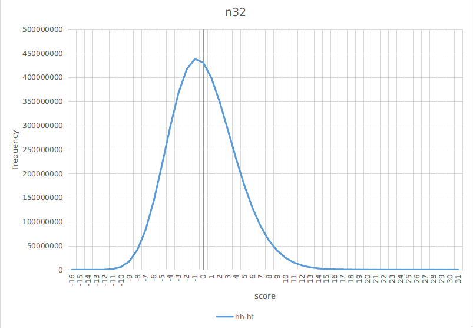
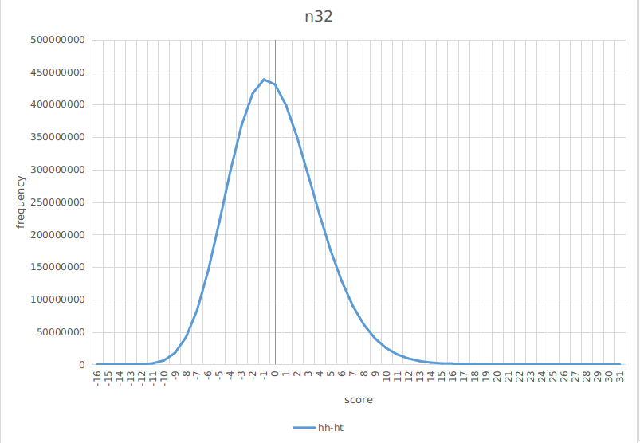

Statistics
Mean \(E(X)\) may not capture a problem's concern
Flip a fair coin 100 times—it gives a sequence of heads (H) and tails (T). For each HH in the sequence of flips, Alice gets a point; for each HT, Bob does, so e.g. for the sequence THHHT Alice gets 2 points and Bob gets 1 point. Who is most likely to win?
-- Daniel Litt
Answer: Bob wins
An intuitive explanation is that HH's distribution is more skewed due to the fact that HH's possible scores are much higher due to consecutive heads. Thus, HH's distribution has more probability mass in the region x < mean. Since HH and HT have the same mean, it follows that HH < HT happens more frequently.
Let n be the sequence length, the mean of Alice's and Bob's distributions are the same (n-1)/4. The below diagram shows the distributions of HH and HT and HH - HT:


As we increase n, the number of possible sequences increases exponentially. Thus we experiment with the sampling method, too. As shown in the below diagrams for n = 32, the sampling method matches pretty well with the exact one:
 

Having confirmed that sampling works, we plot the case for n = 1024

It seems that the Central Limit Theorem is in effect here. Moreover the edge HT over HH has diminishes as the sequence length increases:
| 16 | 32 | 1024 | |
hh < ht | 0.464 | 0.475 | 0.495 |
hh == ht | 0.143 | 0.100 | 0.018 |
hh > ht | 0.393 | 0.425 | 0.487 |
Mean Deviation is more useful than Standard Deviation
The classical argument of the Standard Deviation \(\sqrt{\frac{1}{n-1}\sum(x-\overline{x})^{2}}\) having an advantage over the Mean Absolute Deviation \(\frac{1}{n}\sum\left| x - \overline{x} \right|\) is a fragile one. It works only for the perfect Normal distribution and collapses at the slightest occurance of fat tails. In mathematical terms, the argument states that the statistical efficiency \(\frac{Var(X)}{E(X)^{2}}\) of the Standard Deviation is better than that of the Mean Deviation:
$$\displaylines{ \begin{aligned} \text{Asymptotic Relative Efficiency (ARE)} =\space & \underset{n\to \infty }{lim}\left( \frac{\frac{Var(Std)}{E(Std)^{2}}}{\frac{Var(Mad)}{E(Mad)^{2}}} \right) \\ =\space & \underset{n\to \infty }{lim}\frac{\frac{n{\Gamma(\frac{n}{2})}^{2}}{2{\Gamma(\frac{n+1}{2})}^{2}}-1}{\frac{\pi-2}{2n}} \\ =\space & \frac{1}{\pi-2} \simeq 0.875 \end{aligned} }$$However, this result quickly becomes invalidated when considering the simplest model for volatility, which is a mixing model with an occasional jump with probability \(p\):
$$\displaylines{ Var(x)=\begin{cases} \sigma^{2}(1+a) & \text{with probability $p$} \\ \sigma^{2} & \text{with probability $p-1$} \end{cases} }$$The below diagram shows simulation results with \(p=0.01\) and \(n=10000\):
We see that even though for \(a=0\) \(RE=0.878\), for \(a=2\) \(RE=1.434\) which starts to cause degradation. In other words, a minute presence of outliers makes MAD more efficient than STD.
Morever, many statistical phenomena and processes have "infinite variance" (such as the popular Pareto 80/20 rule) but have finite, and sometimes very well behaved, mean deviations. Whenever the mean exists, MAD exists. The reverse (infinite MAD and finite STD) is never true.
In summary, we should retire the notion of Standard Deviation and replace it with the more effective one of Mean Deviation. Standard deviation, STD, should be left to mathematicians, physicists and mathematical statisticians deriving limit theorems. There is no scientific reason to use it in statistical investigations in the age of the computer.
The Central Limit Theorem does not apply to many real world problems with finite sample sizes
The Generalized Central Limit Theorem states that the sum of random variables \(S_{n} = X_{1}+X_{2}+\cdots +X_{n}\) grows sub-linearly. The below graph (Fig 8.1[1]) illustrates this phenomenon:
A consequence of this is that for all powers \(p=1,2,3,\cdots\), if \(E(X^{p}) < \infty\) then (10.2.6[1]) $$\displaylines{ \underset{n\to \infty}{lim}\frac{\text{max}(X_{1}^{p},X_{2}^{p},\cdots ,X_{n}^{p})}{X_{1}^{p}+X_{2}^{p}+\cdots +X_{n}^{p}} = 0 }$$ For example, in the case of \(p=4\) the forth moment kurtosis, if it exists should make it harder and harder for a single data point to dominate the entire sum as \(n\) increases. The below Max-to-Sum plot (MS plot) for the Taiwan and U.S. stock market shows this is not the case:

| dataset size | Max-to-Sum | |
| Taiwan stock index (TAIEX) | 15556 | 0.15 |
| S&P 500 | 17356 | 0.40 |
| Gaussian with same σ as TAIEX | 15556 | 0.03 |
The reason for the volality in the kurtosis of both the Taiwan and U.S. stock markets is due to their fat tails. To quantify how fat the tails are, we fit them to the pareto distribution \(\frac{1}{x^{\alpha + 1}}\) where alpha is the tail index. The smaller \(\alpha\), the fatter the tail; for \(\alpha <= 4\) kertosis does not exist; for \(\alpha <= 3\) skewness does not exist; for \(\alpha <= 2\) variance becomes infinite; for \(\alpha <= 1\) mean becomes infinite.


Physics might dictate that the mean \(E(X)\) be non-existent
Consider the intensity of a point light source on a vertical wall, as shown below:
The probability of \(\theta\) is the uniform distribution, and the distance between the light source and the wall is \(\ell\). We are interested in the distribution of \(x\). Since \(tan(\theta)=\frac{x}{\ell}\), the distribution is:
$$\displaylines{ \begin{aligned} P(X) =\space & 1 \cdot d\theta \\ =\space & \frac{d\theta}{dx}dx \\ =\space & \frac{1}{\pi} \frac{\ell}{\ell^{2}+x^{2}}dx \end{aligned} }$$which is the Cauchy distribution \(Cauchy(\ell)\). The Cauchy distribution has the property that the sum of two Cauchies is also a Cauchy, \(Cauchy(\ell_{1}) + Cauchy(\ell_{2}) = Cauchy(\ell_{1}+\ell_{2})\). This means we can view the distribution as a random walk by photons in small steps, known as the Huygens principle:

We split \(\ell\) into \(n\) steps, and let \(X_{t}\) be the random variable describing a photon's random walk, \(P(X_{t}) = Cauchy(\frac{\ell}{n})\). The law of large numbers says that the final location of the photon, \(X_{1} + X_{2} + ... + X_{n}\) approaches \(n\cdot E(X)\) as \(n\) increases. In other words, we would observe a single spot of bright light at position \(n\cdot E(Cauchy(\frac{\ell}{n}))\), when the rest of the wall is completely dark. However, a completely dark wall is completely nonsensical in physics. The only way out of this paradox is to conclude that the mean of the Cauchy distribution does not exist.
Reference
- ^ a b c Nassim Nicholas Taleb, Statistical Consequences of Fat Tails: Real World Preasymptotics, Epistemology, and ApplicationsarXiv:2001.10488